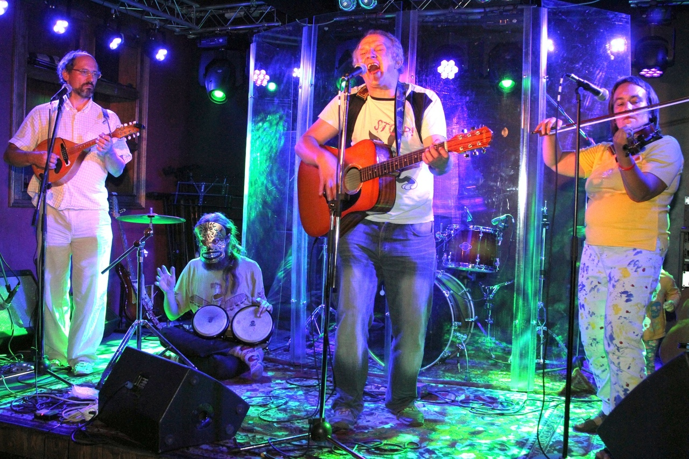

В ближайшее время мероприятий не предвидится
Ближайшие концерты и события
Прошедшие концерты и события
С ДнюХОЙ! Осенний рок-концерт в Бульдог Баре

Грандиозное событие произойдет этой осенью 25 сентября в 19:00 в самом уютном, душевном и очень нами любимом заведении города Москвы - Бульдог Баре!
Участвуют:
- КАРАМАЗОВ ДРАМС
- ДИСФОРИЯ
- ОТРЯД ДЖОНА В ОКРУЖЕНИИ!
- АКУЛИЙ ЖЫР
- АЛЕКСЕЙ НЕКРАСОВ
- ДЖОННИ ХЛЕБ
- ДЕЗДЕМОН СИДОРОВ И НАДЕЖДА
Отмечаем днюху концептуального поэта Джонни Хлеба, а так же празднуем день рождения замечательного фронтмена не менее прекрасной и забойной панк-группы "Карамазов Драмс" Алексея "Волоса", а так же в сентябре успел родится анархо-бард-рокер Дездемон Сидоров.
Вобщем друзья-товарищи, нельзя категорически пропускать сие мероприятие, никак знаете, нельзя.Тем более как играют и поют сами именинники, так и их старые, проверенные друзья, что поздравят собравшихся песнями и стихами. Алексей Некрасов, Арт-фолк-панк-рок-проект "Дисфория" и группа из Солнечного Подольска "Акулий Жыр", а так же панк-группа "Отряд Джона в Окружении!"
ВХОД СВОБОДНЫЙ! (ПОДАРКИ ИМЕНИННИКАМ И ДОНЕЙШН ПРИВЕТСТВУЮТСЯ!) ВСЕХ ЖДЕМ!
25.09.2021 в 20:00 — 26 сентября в
0:00
Клуб Бульдог бар
Москва г., Затонная ул., д 11 к 2А, Москва
Встреча ВК
Зимний рок в Баре Бульдог

В этот вечер в замечательном "Бульдог Баре" мы встретимся с вами, друзья, чтобы вспомнить, что хорошего и не очень случилось в этом году, но грустить не будем. Ибо только оптимизм спасет мир! Для Вас играют и поют:
- Алексей Некрасов (бард-рок)
- Дисфория (Арт-фолк-панк-рок-проект)
- Акулий Жыр (Новый Авангард)
- Дездемон Сидоров и Надежда (Анархо-бард-рок)
ВХОД СВОБОДНЫЙ! (ДОНЕЙШН)
19.12.2020 в 18:00
Клуб Бульдог бар
Москва г., Затонная ул., д 11 к 2А, Москва
Встреча ВК
Группа "ВНЕ" - предновогодний концерт

Участвуют:
- Группа "ВНЕ" - андерграунд-гараж-панк
- Проект ПК - акустика
- "Дисфория" - арт-фолк-панк-рок-проект
- Алексей Кудрявый - акустика
ВХОД СВОБОДНЫЙ! (шляпа!!!)
18.09.2020 в 19:00
Клуб Бар SLAM
Раменское МО, ул. Красная, 22А
10 лет без Коди, или Крик недоступных времен...

Вечер памяти поэта Ольги "Коди" Горпенко (1968-2010)
Участвуют:
- Дисфория
- Королева И
- Чистые носители
- Максим и Марина Леви
- Алексей Кудрявый
- Лунный заяц и сородичи
- Елена Волкова
- и другие
Вход свободный (шляпа!!!)
25.08.2020 в 18:30
Клуб Археология
Адрес: Новорязанская улица, 29 с3, Москва
Встреча ВК
Онлайн трансляция концерта группы "Дисфория"

Приветствуется репост!!!!
- Дисфория
21.06.2021 в 17:00
На странице Сарры ВКонтакте
Тут состоится видеотрансляция
Будем дублировать на станице Сары в Фейсбуке
__________________________________

Рок-Весна уже грядёт и приглашает вас разделить с нами этот праздник!
29 марта в 18-00
Кафе-бар Салют
Варшавское шоссе, д.45.
Вход 200 р
Ждём вас, други!
Встреча ВК: https://vk.com/event192953953
__________________________________

РОК-КОНЦЕРТ в честь 50-летия Славы Гожда
25 января в 19:00
Клуб Археология, ул. Новорязанская, д29 стр.3, ст.м.Бауманская, Москва
Вход 300 р.
Встреча ВК: https://vk.com/event190463437
__________________________________

7.12.19 - #ПАНКРОКШАПИТО 3 года!
Так вот незаметно #ПАНКРОКШАПИТО стукнуло три года. А значит, настало самое время закатить по этому поводу грандиозный концертище!
В этот раз мы сотрясем диким музлом стены Олд Таун Бара. Как всегда будет куча новых и хорошо забытых старых песен, конкурсы, призы, дико эксклюзивный мерч и все-все как ты любишь!
А поддержит нас в этом начинании безумный и крышесносный проект Ивана Глюкавого - группа Дисфория!
Приходи, будет о чем внукам рассказывать!
Бригадирский переулок, 1/13, Москва, м.Бауманская
7 декабря 2019 в 18-00
Встреча ВК: https://vk.com/punkrockcircus_x3
__________________________________
__________________________________

12 мая 2019 года в 19:00 студия авторской песни "Второе Я" представляет на сцене клуба "Археология" вечер памяти замечательного поющего поэта Ольги Горпенко (1968-2010):
"Живою в вечность уплыву..."
Ольга - выпускница факультета психологии МГУ (1991). Психолог, нарколог, поэт, переводчик.
В 6 лет от роду уже складывала правильные стихи. В 11 написала поэму о Ленине (https://vk.com/album-137884014_240088727). Лауреат международного поэтического конкурса в Польше (писала также на польском). Многие свои стихи пела, никогда не играя на музыкальных инструментах. Её произведения звучали по радио и даже пошли "в народ", порой утрачивая авторство. "Что ни стих, что ни строчка, то озарение. Иные стихи потрясают почти до обморока...Много стихов колоссальной психотерапевтической силы..." - /доктор Владимир Леви/. Участвовала в выпусках радиопередачи "Музыкальная аптека" (http://levi.ru/music/position.php?id_position=39) на тему "Музыка и наркотики". С юности интересовалась действием "психоактивных" субстанций, сделала это своей профессией и писала об этом. Её песня "Абстиненция морфинного генеза" стала легендой; один из её музыкальных вариантов заметил писатель Сергей Лукьяненко и вложил в уста героя романа "Сумеречный дозор".
По мнению профессиональных литераторов, ввела в русскую поэзию новую жанровую ветвь - наркологическую поэму. Умела писать и жёсткие панковские тексты, и детские песенки, и тонкую лирику, и отъявленную попсу по заказу, сама же себя считала мастером гимнов и реквиемов. Отличается очень узнаваемым и мощным чёрным юмором.
Книга стихов Ольги издана посмертно, в 2012 году.
Её стихи продолжают звучать, на них сочиняются новые песни, особый респект к ним традиционно наблюдается в московском рок-андеграунде.
Будут:
- Стихи;
- Песни в акустике, в звуке лёгком и потяжелее, с экзотическими инструментами, а капелла, немного дискотеки.
Ненормативная лексика может присутствовать в умеренном количестве (как доктор прописал).
Участники вечера:
Максим и Марина Леви;
Иван "Глюкавый" Чарушин (ex. "Атропиновый кролик") и гр. "Дисфория";
Сарра Атэх и гр. "Королева И";
Алексей и Виктория Кудрявые;
группа "Таможня даёт добро";
Проект "Чистые носители";
Елена Волкова и другие
Организатор и ведущий, дизайнер афиши - Антон Полынов
Участниками можете стать и вы, если выберете для исполнения хотя бы одно произведение Ольги Горпенко и сообщите об этом организаторам.
Выкладываем файл с наиболее полной подборкой текстов Ольги: https://vk.com/doc-168105447_469888704?dl=34f76808c00433742f.
См. плейлисты:
https://vk.com/audio?z=audio_playlist-168105447_3 Разные варианты легендарной песни "Абстиненция морфинного генеза"
https://vk.com/audios-168105447?section=playlists.. Песни других авторов на стихи О.Горпенко, исполнение её песен другими
https://vk.com/audios-168105447?section=playlists.. Авторские записи О. Горпенко
В обсуждениях выложены некоторые стихи.
Вход свободный. Будет проводиться шляпный сбор и распространение дисков с аудио-, видео- и текстовыми материалами.
Новорязанская улица, 29 с3, Москва, м.Бауманская
Встреча ВК: https://vk.com/konzertgorpenko
__________________________________
__________________________________
Инверсия времени

Tverin Karjala lihoslavl'an karielan rahvahan muzej / Карельский национальный музей.
Авторская встреча и концерт гражданской поэзии.
Впервые в городе Лихославль представляет своё творчество, в авторском исполнении, флагман гражданской поэзии - Павел Карачин.
Участники -
Necessary-трио - Александр Дороньев, Алина Юдаева, Павел Карачин
Специальные гости -
группа Дисфория - Иван Чарушин, Сарра Атэх, Сангит Самадхан
13 апреля в 17:00 — 13 апреля в 19:00
Советская улица, 34, г. Лихославль Тверской обл.
Встреча ВК: https://vk.com/event179989213
__________________________________
__________________________________

Весь мир - театр, а люди в нём - актёры! (с)
И в этот день 27 марта в 19-00 в клубе "Археология" https://vk.com/arheo_club выступят:
Группа "Дисфория" https://vk.com/disphorya
Группа "Таможня даёт добро" https://vk.com/customs_house
Музыкант Алексей Кудрявый https://vk.com/alex_kudryavy
и другие
Москва, ст.м.Бауманская, ул. Новорязанская, д.29 стр.3
Вход 250 р.
27 марта в 18:00 — 27 марта в 23:00
Новорязанская улица, 29с6, Москва
Встреча ВК: https://vk.com/theatrearhe
__________________________________
__________________________________

Приглашаем вас на панк-фестиваль, преисполненный угаром и весельем!
Перед вами выступят:
Ник Рок-н-ролл и AzzzA
Отряд Джона в окружении
Тени забытых предков
Дисфория
Трест
Будет весело и страшно!
метро Алексеевская, улица Новоалексеевская, дом 12, стр. 1
Встреча ВК: https://vk.com/event177108118
__________________________________
__________________________________
6 декабря в "Археологии" - День Рождения Антона Полынова! Дисфория также будет выступать в акустической версии.

Вот фотопутеводитель до клуба:
https://yadi.sk/i/jCjHp8u93JnqGi
Адрес: Новорязанская ул. 29, стр.3, м.Бауманская
__________________________________
25 ноября 2018 "Дисфория" в акустике будет выступать здесь:

__________________________________

24.11 - ПАНК ФЕСТ в "Вермеле"!
Панк фест - Концерт к 40-летию Кости Маргинала.
Участвуют:
Мёртвый месяц (cover ВИА Сектор газа)
Дисфория
Страна идиотов
Лабов'SKY JAM & Сергей Летов (cover ГрОб)
Вход 300 р.
Начало в 18.00
Клуб ВЕРМЕЛЬ - Раушская наб., 4/5,
Встреча ВК: https://vk.com/event172967141
__________________________________

27 октября 2018 в субботу в 15-00 на легендарной квартире Владимира и Марины Перцевых на Коломенской состоится квартирный концерт очень разноплановых, но в чём-то созвучных музыкантов.
Выступают:
группа "Дисфория" https://vk.com/disphorya ;
Юлия Теуникова https://vk.com/teuha ;
Сарра Атэх (и группа "Королева И") https://vk.com/koroleva_ii ;
Александр Сорокин https://vk.com/id14001106 ;
Алексей "Сангит" Кудрявый https://vk.com/alex_kudryavy
Вход: 300 р.
Адрес: ст.метро "Коломенская", Кленовый бульвар , дом 10 , корп. 2 , кв. 301 . код 301к 2144 . телефон для справок : 8.926.042.25.12 Владимир и Марина . ДО ВСТРЕЧИ !
Встреча ВК: https://vk.com/percev27
__________________________________

Наркомат и боевые товарищи / 30 мая
Непобедимая и легендарная правда бытия!
Совместный концерт "Наркомат", "Дисфория", "Королева И" и Павла Карачина!
Начало 19:00. Вход 200 руб
Москва, ул. Мясницкая, д.15, Lions Head Pub
Сообщество ВК: https://vk.com/event166421151
__________________________________

Ближайшее сольное выступление лидера "Дисфории" Ивана "Глюкавого" Чарушина
состоится 28 апреля в Израиле в городе Хайфа в пабе "Родео" в 21-30.
Адрес: Израиль, Хайфа, ул.Бальфур, 23, паб "Родео".
Вход 30 шекелей.
Сообщество в ФБ: https://www.facebook.com/events/318675528659082/?notif_t=plan_user_invited¬if_id=1524252724882372
__________________________________

ХЛЕБ. Панк-фестиваль! Контора Кука (г. Самара), Страна идиотов, Дисфория, Нулевой пациент и Отряд Джона в окружении зажгут на панк-фестивале ХЛЕБ! Ждём вас, друзья! Будет весело и страшно!
7 апреля, 19-00
Гарцующий Дредноут, Москва, Таганская ул. д.13, стр.3.
Вход 400 р. Встреча ВК https://vk.com/hlebfest
__________________________________

Shlapper Fest After Party 6 апреля в 19:00
Рокнроллам Быть!
В связи с тем, что концерт День Рождения Шляппера был закрыт администрацией клуба и не все смогли выступить мы решили сделать After Party и дать возможность выступить тем, кто этого не успел сделать в прошлый раз. В программе вечера:
Шляппер / Арина Карельская / Егор Аверкиев
Павел Карачин
Сны Социопата
День Донора
Дисфория
Специальный Гость: Дмитрий Ъ с специально подготовленной программой. В программе только боевики.
Вход: Платный, каждый платит столько, сколько посчитает нужным
Все будет в клубе Вермель http://vermel.ru Москва, Вермель, Раушская набережная, 4
6 апреля в 19:00
Встреча ВК https://vk.com/shlapper_fest_afterparty
__________________________________

Дисфория - квартирник в Труплейс
пятница | 30 марта | 20:00 | Москва
Друзья, в пятницу, 30 марта в Труплейс состоится квартирник группы Дисфория. Недавно на концерте Лётной школы Дисфория выступала в качестве гостей и с первых нот эта группа запала в наши сердца и мы поспешили пригласить их в гости. Это будет первый за последние семь лет квартирник коллектива! Ребята сыграют в акустическом составе: гитара, мандолина(!), скрипка и перкуссия.
Квартирник тем более стоит посетить, поскольку помимо "Дисфории" состоится небольшое, столь редкое сейчас выступление группы "Королева И" https://vk.com/koroleva_ii в лице Сарры Атэх, а также короткий сольный сет участника обоих коллективов Алексея "Сангита" Кудрявого.
Ознакомиться с творчеством коллектива можно тут:
https://vk.com/disphorya
Запись на квартирник обязательна!!! (см. соответствующий пост на стене)
Сбор гостей в 19:30, начало в 20:00.
Вход 200 р.
Наш адрес - Симферопольский бульвар дом 14, точную схему прохода выложим непосредственно перед квартирником.
Приносите еду и побольше алко!
Встреча ВК https://vk.com/disforiavtrplc
__________________________________

ДАМЫ И ГОСПОДА!!! WARNING!!!
Флагман гражданской поэзии представляет новую работу! "ПРОДАННЫЙ СМЕХ" альбом-бомба, где собраны наиболее известные произведения поэта-нигилиста.
Но и это не все! Выступление будет происходить под музыкальное сопровождение замечательных музыкантов - Алины Юдаевой и Александра Дороньева.
И, конечно, не обойдется без мощнейшей поддержки ярчайших представителей музыкальной элиты андеграунда.
кафе "Горох", Москва, 3-й проезд Марьиной Рощи, д. 40, стр. 1
24 марта в 18:00
Встреча ВК https://vk.com/smeh_present_moscow
__________________________________

9.12 - Ник Рок н ролл & AzZza ID в Мьюзе
Начало в 18.00 вход - 400/250 (френдлист)/300 на сайте клуба
Традиционно запускаем розыгрыш двух проходок на два лица каждая!
Для участия в розыгрыше нужно вступить во встречу концерта:
https://vk.com/nickrock_muse
и сделать репост этой записи.
9-го декабря в клубе Мьюз Ник рок н ролл & AzZza ID (при участии ритм-секции группы "Трите Души" и Арины Карельской) представят на суд зрителей новую электрическую программу.
"ЭЛЕКТРИЧЕСКИЙ КОНЦЕРТ ДЛЯ ЛЮДЕЙ И ИХ РОДИТЕЛЕЙ"
Специальные гости:
Жадов, Сдвиг, Маркус
Natalie Antares
Павел Карачин
Дисфория
Как всегда в Мьюзе мы предлагаем самые гуманные цены.
Билеты в предпродаже на сайте клуба Мьюз - 300 рублей
http://www.musebar.ru/
На входе в день концерта - 400 рублей/250 (friendlist)
Бронь столов по телефону 89647006138
Начало концерта в 18.00
Адрес: м. Таганская, ул. Николоямская, д. 23/58
Встреча ВК https://vk.com/nickrock_muse
__________________________________

Антон Полынов: "Химус" возвращается 6 декабря.
Всех. кто знает меня и уважает поэзию, авторскую песню, рок-н-ролл, панк-рок и вообще высококачественную музыку, приглашаю на концерт в День моего рождения! Прозвучат старые добрые вещи, мы вспомним то, с чего все начиналось - студию "Химус", расцвет которой пришелся на 1989-1994 годы.
Действо-злодейство пройдет в клубе "Археология", недалеко от метро "Бауманская". Начало в 19-00.
Вкусное пиво, другие напитки и недорогую кухню нам обеспечат.
Вот фотопутеводитель до клуба:
https://yadi.sk/i/jCjHp8u93JnqGi
Адрес: Новорязанская ул. 29, стр.3, м.Бауманская
__________________________________

2/12 Не ждали? Диверсия! ч. 3
Презентация сборника "Не ждали? Диверсия!" часть 3 в день рождения Джона. Развлекать публику в этот вечер будут :
"Трест", "Дисфория", "Агония", "Уши Ван Гога", "Отряд Джона в окружении", Павел Карачин
Спец. гости из Волгограда : группа "Симптом Ортнера"
Сбор гостей в клубе Вермель с 17:30, начало в 18 часов
Вход : 300 рублей
Подарки имениннику приветствуются
клуб Вермель, Раушская наб. 4 (Москва)
2 декабря в 18:00
Встреча ВК https://vk.com/nezhdali_diversiya_3
__________________________________

Столетию Всероссийского Пролеткульта посвящается...
Москва
12 ноября в 17:00 — 12 ноября в 23:00
Вход: 300 р.
Адрес: Кафе "Горох", 3-й проезд Марьиной рощи, д.40 стр 1
Встреча ВК https://vk.com/proletculture
__________________________________

25 октября 2017 в 18-30 в клубе "Археология" https://vk.com/arheo_club состоится осенний концерт "Ночь на пороге ноября"
Выступают:
Группа "Дисфория" https://vk.com/disphorya
Группа "Королева И" https://vk.com/koroleva_ii
Александр Рассказов https://vk.com/id63118097
Николай Высотин https://vk.com/id33733253
Наталия Иванова https://vk.com/public143936610
Алексей Кудрявый https://vk.com/alex_kudryavy
Вход: 250 р.
Адрес: Новорязанская ул. 29, стр.3, м.Бауманская
Встреча ВК https://vk.com/no4nov
__________________________________

Павел Карачин: "ДРУЗЬЯ МОИ!!!
Ровно год назад - 13 октября 2016 г. - в результате памятного концерта "Полный Бардак" было организовано сообщество "Комплот". Год не прошел зря! И в этот торжественный день я бесконечно рад представить вашему вниманию новый диск-альбом "ВОЛЧЬЯ ЯМА".
ТОЛЬКО ПОЛИТИКА!!! БЕЗ КОМПРОМИССОВ, СОПЛЕЙ И ССЫКЛИВОГО ПРЕСМЫКАТЕЛЬСТВА ПЕРЕД "ЦЕНЗУРОЙ", "ФОРМАТОМ", "ЧУВСТВАМИ" ВСЯКИХ ТАМ... И ПРОЧЕЙ ХЕРНИ!!!
В КОНЦЕРТЕ ПРИНИМАЮТ УЧАСТИЕ МОИ ДРУЗЬЯ - ЛУЧШИЕ ПРЕДСТАВИТЕЛИ АНДЕГРАУНДА!!!
КАЖДОМУ ПРИШЕДШЕМУ - ДВОЙНОЙ ДИСК В ПОДАРОК!!!
ПРИ ПРЕДЪЯВЛЕНИИ ПРОШЛОГОДНИХ СУВЕНИРОВ - ВХОД БЕСПЛАТНЫЙ.
Ну и, разумеется, книги всем желающим. С картинками!"
кафе "БарДАк", ул. Арбат, д. 35 (Центральный дом актера, 2-й этаж)
13 октября в 18:00
Встреча ВК https://vk.com/volchya_yama_present
__________________________________

20.09 НИК РОК-Н-РОЛЛ впервые в Мьюзе!
Билеты в предпродаже на сайте клуба - 300 р., в день концерта на входе - 400 р.
Впервые в Мьюзе! Легендарный Ник Рок-н-Ролл - советский и российский рок-музыкант, один из основоположников «рок-перфоманса» и шок-рока в России.
Начинал свою карьеру на сцене в группе «Второй эшелон» (Крым) с Юрием Юксом. Прославился, создав в 1989 году во Владивостоке группу «Коба». Позже переехал в Тюмень. Основал рок-группу «Трите души». Также делал совместные записи с коллективами «Лолита», «Островский» и «The Vivisectors». Главное действующее лицо документального фильма «Погружение», вышедшего в 2009 году, и онлайн-сериалов «Неподдельный рок» и «Мой рок-н-ролл», посвящённых современной независимой рок-музыке.
Основал в Тюмени межрегиональный рок-центр «Белый Кот». Является автором Всероссийского фестиваля женского рок-вокала «Сирин», который долгие годы проходил в городе Тюмени. На этом фестивале дебютировали такие в дальнейшем известные группы и певицы, как «Чичерина», «Ночные снайперы», Наталия Медведева, Юлия Теуникова, Ольга Дзусова, Инна Желанная, Ольга Арефьева, «Дети Picasso», «IndigoDiva» и многие другие известные в России и за её пределами. Являлся председателем жюри международного конкурса TheGlobalBattleOfTheBands (Россия), номинатором и экспертом всероссийского проекта «Культурные герои 21 века» (Тюмень).
С 2009 года сотрудничает с проектом «AzZzA» (екатеринбургский музыкант Азат Мухаметов), а также с проектом «Братья Коробейниковы» (известный екатеринбургский инферно-режиссёр Дмитрий Коробейников).
20 сентября, 19.00 клуб Мьюз, м. Таганская, ул. Николоямская 23/58
+спецгости: Павел Карачин, Владимир Белканов, группа Дисфория
Билеты в предпродаже на сайте клуба 300 рублей, в день концерта на входе - 400 рублей.
Купить билеты: http://www.musebar.ru
Бронь столов по телефону: +79647006138
клуб Мьюз, Николоямская ул., 23/58
20 сентября в 19:00
Встреча ВК https://vk.com/nikmuse200917
__________________________________
__________________________________

ТВОРЧЕСКИЙ БЕSПРЕДЕЛ / Тверь / 11.06.2017
Клуб "СОБАКА МИЛЛЕ", ул. Ерофеева, д. 2, Тверь
11 июня в 16:00
Вход СВОБОДНЫЙ!!!
Встреча ВК https://vk.com/event147600525
__________________________________

27 мая в клубе «Вермель» 50-летие отмечает основатель и бессменный лидер группы «ТРЕСТ» Владимир Колосов!
В праздничном концерте примут участие друзья-музыканты: группы «Дисфория», «Уши Ван Гога», «Я и Ду и Чемоданчик Денег», Оля Земляника.
Поэтическое сопровождение вечера обеспечит Александр Маклаков.
И, конечно же, свое фирменное шоу с полной выкладкой выдаст сам ТРЕСТ!
Вход 300 р. – по френд-листу 200 р. - писать в личку Светлане Брысиной https://vk.com/id329717107
https://vk.com/clubvermel клуб Вермель.
27 мая в 19:00
Встреча ВК https://vk.com/event146705097
__________________________________

ДАМЫ И ГОСПОДА!!! ДРУЗЬЯ И ПРОТИВНИКИ!!! ВНИМАНИЕ!!!
10 МАЯ, В СРЕДУ, СОСТОИТСЯ ПРЕЗЕНТАЦИЯ ПЕРВОГО ДИСКА ПАВЛА КАРАЧИНА "ФЛАГМАН ГРАЖДАНСКОЙ ПОЭЗИИ", НА КОТОРОМ ПРЕДСТАВЛЕНЫ НАИБОЛЕЕ ПОПУЛЯРНЫЕ ПРОИЗВЕДЕНИЯ В НОВОЙ, ДОСЕЛЕ НЕСЛЫХАННОЙ ОБРАБОТКЕ!!!
В КОНЦЕРТЕ ПРИНИМАЮТ УЧАСТИЕ ЛУЧШИЕ ПРЕДСТАВИТЕЛИ РОК-АНДЕГРАУНДА!!!
НАСТОЯЩЕЕ, ЧЕСТНОЕ, БЕСКОМПРОМИССНОЕ ИСКУССТВО, МОРЕ ДРАЙВА, МАССА ЭМОЦИЙ И ВПЕЧАТЛЕНИЙ, А ТАКЖЕ ДИСКИ И КНИГИ ГАРАНТИРУЮТСЯ ВСЕМ ПРИШЕДШИМ НА МЕРОПРИЯТИЕ!!!
P.S. А противникам выдается уникальный шанс прийти и высказать все, что они думают о провокационном поэте, прямо ему в лицо!!!
P.P.S. БАТАЛЬОНЫ ПРОСЯТ РЕПОСТОВ!!!
Встреча ВК https://vk.com/flagman_disk_present
__________________________________

Вакханалия драйва и угара, НЕ ПРОПУСТИТЕ!
Ждем вас, друзья!
НА СЦЕНЕ:
- Легендарная "СТРАНА ИДИОТОВ" 22 года на русской панк-сцене!
- КГБ
Отвязные панки прямиком из мрачной Самары! Угар, слэм и пьяный дебош гарантирован!
- Дисфория
Доктор Иван Глюкавый поспешит к вам на помощь!
За психоделическую часть в этот вечер отвечают именно они.
- Олег "Киса" Ильченко.
Шаман, музыкант и наш давний друг из Орла посетит нас со своими символичными и солнечными песнями.
- Левый шум
Параллельный проект группы " Паровой человек " Шум, грязь, драйв, лютый панк рок!
- Новый андеграундный проект Джонни Хлеба и Наташи Огольцовой "проект Саркома". Тексты полные символизма, любви и бесконечной тоски, под экспрессивное исполнение!
Песни для тех, кого не ждут.
- Русский садизмЪ
Самарские отморозки!
Рашн садо-мазафака, бессмысленная и беспощадная... Защеки негодуют, буратины трепещут, псы огрызаются...
Сан Саныч расчехлил русский садизмъ и пошёл убивать!
Be Young Bar, Измайловский Вал ул. дом 2
7 мая в 19:00
Вход 300 р.
Встреча ВК https://vk.com/panki_v_gorode_msk
__________________________________

Клуб "Швайн" 27-е апреля. Презентация сборника "НЕ ЖДАЛИ?! ДИВЕРСИЯ!" (часть 2) Играют участники проекта - исполнении друзей группы. Участвуют группы : МАНАГЕР (Олег Судаков), ОТРЯД ДЖОНА В ОКРУЖЕНИИ!, ANENERBE MUSIC CLUB, ТРЕСТ, УШИ ВАН ГОГА, ДИСФОРИЯ.
Вход: 400 р.
По френд листу -250р. Желающие записаться в френд лист, пишите в группу или мне в личку.https://vk.com/id329717107
Наш адрес: м."Бауманская" Лефортовский пер. 12/50
Заказ столиков:8 (499) 267 45 04
ПРИХОДИТЕ - НЕ ПОЖАЛЕЕТЕ!!!
http://www.schwein.ru/
ШВАЙН клуб-кафе
27 апреля в 18:00
Встреча ВК https://vk.com/event144103503
__________________________________

День Рождения виртуозного перкуссиониста Эндрю Мохнатого с Кутузона в клубе "Археология" https://vk.com/arheo_club
23 апреля в 18-30
Выступят:
Брамбуляк - https://vk.com/brambylak
the Ерофей Пирогов - https://vk.com/yariva
Дмитрий Махов - http://www.mahov.ru
Алексей Беленкин - https://vk.com/id9825461
Алексей Кудрявый - https://vk.com/duetcurly
группа "Дисфория" - https://vk.com/disphorya
группа "Королева И" - https://vk.com/koroleva_ii
Вход - 250 р
Археология, Новорязанская ул, 29, стр 3
Встреча ВК https://vk.com/event143578911
__________________________________

День Рождения легендарного основателя групп "Атропиновый Кролик" и ныне действующей "Дисфории", мастера панк-психоделии Ивана Глюкавого (он же Кролик).
Пройдёт традиционно в клубе "Археология" https://vk.com/arheo_club
11 апреля в 18-30
Выступят:
группа "Дисфория" - https://vk.com/disphorya
группа "Королева И" - https://vk.com/koroleva_ii
Юлия Неволина - https://vk.com/ne_volina
Вадим и Василий Погожевы - https://vk.com/id139827901
Павел Карачин - https://vk.com/pamyaty_samogo_sebya
Виктория и Алексей Кудрявые - https://vk.com/duetcurly
Вход 250 р.
Адрес: ул. Новорязанская, д29 стр.3, ст.м.Бауманская
Встреча ВК https://vk.com/drkrolik2017
__________________________________

ВНИМАНИЕ! Концерт перенесён в "Олд Таун Бар"!!!! Ольховская ул. 14 стр1
22 марта в 18-30 в клубе "Олд Таун Бар" https://vk.com/stari_bar состоится Большой весенний концерт (и акустика и электричество) группы "Дисфория" https://vk.com/disphorya
Специальный гость - легендарный рок-бард Александр Рассказов https://vk.com/id63118097
Вход - 250 р.
Адрес: Олд Таун Бар, Ольховская ул. 14 стр 1
Как добраться от метро Красносельская
1) Выходим из метро
2) Переходим на светофоре ул. Краснопрудная
3) И прямо по Нижней Красносельской прямо прямо
4) По Жд мосту, мимо Покровского храма, мимо Маресьева до Транс АЗС
5) Переходим Нижнюю Красносельскую на светофоре
6) Переходим Ольховскую на светофоре
7) Движемся по Ольховской до шлагбаума и граффити Авиатор
8) Делаем милое лицо проходим спокойно через проходную
9) После проходной движемся строго прямо до упора до вывески «Олд Таун Бар»
Как добраться от метро Бауманская
1) Выходим из метро Бауманская
2) Переходим ул. Бауманская
3) Идем через Торговую галерею до конца
4) На светофоре переходим ул. Спартаковская
5) И прямо прямо по Нижней Красносельской по пересечения с ул.Ольховская
6) Переходим Нижнюю Красносельскую на светофоре
7) Движемся по Ольховской до шлагбаума и граффити Авиатор
8) Делаем милое лицо проходим спокойно через проходную
9) После проходной движемся строго прямо до упора до вывески «Олд Таун Бар Олд Таун Бар, Ольховская ул. 14 стр1
Встреча ВК https://vk.com/event141587707
__________________________________

18 марта в 19-00 в клубе FLAT https://vk.com/flatkaluga состоится выступление московских групп:
"Королева И" - https://vk.com/koroleva_ii
"Дисфория" - https://vk.com/disphorya
Вход: шляпный сбор.
Адрес: Калуга, ул. Карла Либкнехта, 29 (Арт-завод)
Встреча ВК https://vk.com/event140687152
__________________________________

17 марта в 19-00 в Travel Cafe.
Ник Рок-н-Ролл и AzZzA электро-акустический дуэт с программой "Облачный Артист" при участии групп "Дисфория" и "Anenerbe Music Club ".
Вход : 300 рублей.
https://vk.com/nickrocknroll
Travel Cafe Москва ул. Верхняя Радищевская д.7 стр.1, http://vk.com/club76897606
Встреча ВК https://vk.com/nick_artist
__________________________________

День Рождения Большого и Маленького Медведя состоится 23 февраля в 17-00 в клубе Бар Объект17 https://vk.com/objectbar
Поздравлять юбиляров будут:
Группа "Королева И"
Группа "Дисфория"
Юлия Теуникова
Группа "Части целого"
Группа "Третья грань"
Матвей "Хамстер" Лошаков
Алексей "Сангит" Кудрявый
И многие другие...
На вечере будут звучать песни Сарры, групп "Время Ч" и "Королева И" в исполнении гостей, с аккомпанементом музыкантов "Королевы И"
Также в программе - свободный микрофон для песен и стихов про медведей!
Вход: Шляпа!
Адрес: Бар "Объект17" клуб, Москва, м. "Рязанский проспект", ул. Стахановская, 17, стр. 1
Встреча ВК https://vk.com/medveden23
__________________________________

20 лет без Злыдня
11-го февраля в арт-бомбаре "Лихоборн" состоится фестиваль памяти Евгения Латышева (Злыдень) - "20 лет без Злыдня". Участники- ТРЕСТ, УШИ ВАН ГОГА, ОТРЯД ДЖОНА В ОКРУЖЕНИИ!, ДИСФОРИЯ, КАМЕРА ОБСКУРА, ДЕНЬ X, ГАШАН и спец.гости.
Старт в 18.00.
Вход свободный. Адрес: м.Петровско-Разумовская, ул.Вернелихоборская стр.12
(от метро на транспорте от центра по Дмитровскому Шоссе, 2-я останова "7-й автобусный парк, перейти по надземному переходу, далее вперёд до повоота налево, повернуть налево и держась правой стороны шагать 200 метров)
Встреча ВК https://vk.com/event139760889
__________________________________

Вечер памяти поэта Ольги Горпенко на Мясницкой
О слушатель, который рядом!
Взгляни из точки нулевой:
Кем лучше быть - крылатым задом
Иль отсеченной головой?
5 февраля 2017 года в арт-кафе "Столовая" пройдет серьезный, весёлый, бескомпромиссный, с панк-изюминкой вечер памяти замечательного поэта Ольги Горпенко (1968-2010).
Ольга - выпускница факультета психологии МГУ (1991). Психолог и нарколог. Явив еще в детстве признаки гениальной одаренности, писала стихи всю жизнь. Лауреат международного поэтического конкурса в Польше (писала стихи также на польском). Многие свои стихи пела, никогда не играя на музыкальных инструментах. Её песни и стихи звучали по радио и даже пошли "в народ", порой утрачивая авторство. "Что ни стих, что ни строчка, то озарение. Иные стихи потрясают почти до обморока...Много стихов колоссальной психотерапевтической силы..." - пишет о ней доктор Владимир Леви.
Участвовала в выпусках радиопередачи "Музыкальная аптека"
(http://levi.ru/music/position.php?id_position=39,
http://levi.ru/music/position.php?id_position=40)
на тему "Музыка и наркотики".
С юности интересовалась действием "психоактивных" субстанций, сделала это своей профессией, много об этом писала. "Вот уж панк из панков... куда уж там Шнур со своими развеселыми матюками" - говорит устами героя о ее песне "Абстиненция морфинного генеза" Сергей Лукьяненко в "Сумеречном дозоре".
Могла, однако, и попсу, и детскую песенку... А её чёрный юмор - это уже строго для взрослых...
Всех, кто помнит студенческую жизнь, да и вообще атмосферу 1980-90-х годов, кто ходил на концерты, оттягивался в общагах, вёл насыщенную творческую жизнь тогда и продолжает сейчас, настоятельно ждем в гости. Не пожалеете.
Место удобное, рядом с музеем Маяковского (долгое время, кстати, - любимого поэта Ольги). Очень дешёвая приличная еда, а вкусняшки, которые там не подают, можно иногда извлечь из широких штанин (рукавов). Хороший звук, который мы постараемся сделать разнообразнее прежнего - акустика, немного "фонеры", порой и "тяжеляк" случается. Участие профессиональной певицы Сарры Атэх и звезды московской панк-альтернативы Ивана Глюкавого добавляет убедительности приглашению!
Ул. Мясницкая, д. 10, 2 этаж (ниже по ссылке видно на карте)
https://vk.com/club44967928 - тут много стихов, автобиография, аудио, видео.
http://levi.ru/guests/guests.php?id_catalog=41, http://dosug-club.ru/
Арт-кафе "Столовая", Мясницкая ул.
5 февраля в 17:00
Встреча ВК https://vk.com/event137884014
__________________________________

Встреча ВК https://vk.com/event137732320
__________________________________

День рождения Лунныя Заяца / 03.02.2017
Кафе "AMbar", Усиевича ул., д. 18 /// 18:00
Бессменный басист групп "Купранов Овраг" и "Охота жить" Сергей Ситников, он же Лунный Заяцъ отмечает свой день день рождения в компании друзей в уютном кафе "AMbar".
К поздравлениям присоединятся:
"Купранов Овраг"
"Охота жить"
"КПSS"
"НЕКИ4ИСЬ"
Дмитрий Махов
Женя Сучков
"Дисфория"
Alice WildChild
"Московские окна"
Алина Юдаева
Владимир Lumiere
Вход БЕСПЛАТНЫЙ
Кафе "AMbar", Усиевича ул., д. 18
__________________________________

30 ноября, когда осень сменяется зимой, а душа настроена на философский лад,
в клубе Археология в 18-30 состоится концерт в котором выступят:
Вася Алексеев
Александр Рассказов
Павел Карачин
группа "Королева И"
группа "Дисфория"
Вход - 250 р.
Клуб "Археология" https://vk.com/arheo_club
ул. Новорязанская, д29 стр.3, ст.м.Бауманская
30 ноября в 18:30
__________________________________

Летние каникулы Радио Ку в клубе им. Дж.Рубина
Друзья! Не смотря на то, что вы еще не дождались своего полноценного отпуска, лето уже наступило, и вот мы снова живые и чувственные, снова дышим полной грудью и радуемся по любому поводу и без повода!
"Радио Ку!" дает наконец повод собраться всем вместе и отплясать, как душа и тело того просят!
В клубе Джерри Рубина не бухают, так что печеньки к чаю приветствуются)
Рекомендуемый взнос при входе от 100р
Местоположение: Свободный Мир
Начало: 25 июня в 18:00
__________________________________
__________________________________

Большой концерт в ДЕНЬ ПИВОВАРА / 11.06.2016.
Начало в 16:00 / Вход СВОБОДНЫЙ!
Ожидается теплая встреча творческих людей за кружкой пива или чая.Никого не оставят равнодушными музыкальные перфомансы от группы Ленинский проспект,арт звучание Дисфория и русский рок Освод,лучезарный Юрий Арцизов и загадочный Антон Гумбин,неотразимой Борис Шишкин сотоварищи и многие другие представители творческой интеллигенции.
Сбор к 16 -00.
Начало 17-00.
Свободный микрофон!Обязательно!
"Налетай,торопись, покупай живопись!"
Местоположение:
Кафе "AMbar", Усиевича ул., дом 18
Начало: 11 июня в 16:00
__________________________________

Традиционное ежегодное празднование Дня Рождения Кролика - Ивана Глюкавого в клубе Археология на этот раз пройдет 13 апреля в 18-30. Выступают:
Группа "Дисфория" https://vk.com/disphorya
Группа "Уровень моря" www.uromor.ru
Группа "Купранов овраг" https://vk.com/kupranovovrag
Макс Орех https://vk.com/orekh
Кудрявый Алексей https://vk.com/duetcurly
Клуб "Археология" https://vk.com/arheo_club
ул. Новорязанская, д29 стр.3, ст.м.Бауманская
Вход 250 р.
__________________________________

25 марта в 19-00.
Психодел-фолк-панки - группа Дисфория снова выступят в Калуге. В этот раз с акустической программой.
Сюрпризом для публики будет сольное выступление участника Дисфории и Королевы И Алексея Кудрявого (Сангита) с программой его песен и романсов на стихи современных и классических поэтов.
Вход - шляпный сбор!
Клуб Flat https://vk.com/flatkaluga г.Калуга, ул. Карла Либкнехта, 29 (Арт-завод)
Группа "Дисфория" https://vk.com/disphorya
Алексей Кудрявый - https://vk.com/duetcurly
__________________________________

Большая весенняя акустика в Олд Таун Баре 17 марта в 19-00.
Группа Дисфория (большая акустическая программа в малом составе).
Также выступят внешние и внутренний гости (есть же Внешняя Монголия и Внутренняя Монголия).
Внешний гость - Генри Бэсхэ,
Внутренний гость — Алексей Кудрявый.
Вход — 200 руб.
Группа "Дисфория" https://vk.com/disphorya
Генри Бэсхэ - https://vk.com/genrrrai
Алексей Кудрявый - https://vk.com/duetcurly
Олд Таун Бар - https://vk.com/stari_bar Староваганьковский переулок 19 стр.3
__________________________________
__________________________________

27 февраля в 19:00 Рок-фестиваль "Хлеб" в баре "Дождь-мажор"!!!
В фестивале примут участие:
Группа КПД (Тула)
Олег "Киса" Ильченко (г.Орёл)
Дисфория
Отряд Джона в окружении
Уши Ван Гога
Комора
Дездемон Сидоров
г. Москва, ул. Измайловский вал, д.2
Вход 300 р.
Встреча ВК
__________________________________

25 февраля - День Составления Географических Карт Несуществующих Земель.
Все мы в детстве с восторгом листали атласы, крутили глобус, представляя себя открывателями-первопроходцами, рисовали карты волшебных стран, где ждут опасные приключения.
Но до сих пор многие из нас открывают эти невиданный земли у себя в душе, в фантазиях, снах, галлюцинациях. И рассказывают о них в своем творчестве.
О своих странствиях и творческих путешествиях расскажут:
Генри Бэсхэ
Юлия Неволина
Сергей Беспалов
Группа "Дисфория"
Клуб Археология
Адрес: Москва, м.Красносельская, ул. Новорязанская, д29 стр.3,
Вход: 250 р.
Встреча ВК
__________________________________
__________________________________
ДР Джона 11-го декабря

Отмечаем день рождения Джона! Добро пожаловать всем желающим! Будет много музыки, общения, старых и новых друзей, бодрого настроения и вкуснейшего алкоголя! Всех пришедших бармен Джеймс угощает модным фирменным 40-ка градусным напитком "В ОКРУЖЕНИИ!"
Музыка от:
ОТРЯД ДЖОНА В ОКРУЖЕНИИ!, УШИ ВАН ГОГА, ДИСФОРИЯ, !БЕЗ КОМПРОМИССОВ!, СТРАНА ИДИОТОВ, ТРЕСТ, DЕНЬ Х, ЛОРА ЛЕРМОНТ
Вход 200 руб.
Местоположение: творческий центр "Нота", ул.Чертановская д.9 стр.3
Начало: 11 декабря в 18:00
Встреча ВК https://vk.com/event108247218
__________________________________
__________________________________
10 лет группе "УРОВЕНЬ МОРЯ" в клубе МАССОЛИТ

А вот удивительная новость, господа!
В этом году нам исполняется 10 лет, представьте себе.
Десять лет назад состоялся невероятный, самый первый наш концерт в доме детского творчества "Орион". Хы.
Эту знаменательную дату мы будем отмечать разудалым концертом 4 декабря в клубе " Массолит" (Нижегородская ул., д. 32/5, пройти в арку, справа вход в подвал).
Проехать туда ТАК:
Нас поздравить придут группы "Дисфория", "Королева И" и другие. Как тогда, в самый первый раз...
Начало в 20.00, вход шляпный. Ждём-пождём!
Веб-сайт: http://uromor.ru
Начало: 4 декабря в 20:00
Встреча ВК https://vk.com/uromor_10
__________________________________
__________________________________

Мы приглашаем вас на грандиозный Панк Вторник в клубе Мьюз! На стартовой площадке для вас будут играть: Легендарные " Без компромисов!" Молодые ,громкие, яркие: группа "Заткнись!" А так же весьма самобытный и драйвовый коллектив: "Дисфория" Панк вторник это зарядка настоящим драйвом на всю неделю! И не забудьте о сюрпризах которые приготовили для вас наши друзья и партнеры!!!
Участвующие команды:
" Без компромисов!"
"Zatkнись" vk.com/zzzat
"Дисфория"
Начало в 19:30
Клуб Мьюз, Москва, ул. Николоямская, д.23/58 Стоимость входного билета 350 рубликов! Приходите друзья!
Встреча ВК https://vk.com/event104645801
__________________________________
__________________________________

7 октября 1849 скончался великий писатель и поэт Эдгар Аллан По.
В память этого выдающегося мрачного романтика, мистика и психоделиста, певца Сверхъестественного и Смерти в клубе "Археология" для вас выступят:
группа "Королева И" https://vk.com/koroleva_ii
Сергей Белов
Группа "Дисфория" https://vk.com/disphorya
группа "Части целого" https://vk.com/4asticelogo
Начало в 18-30 Вход 200 р.
Клуб "Археология" https://vk.com/arheo_club
Адрес:
ул. Новорязанская, д29 стр.3, ст.м.Красносельская
как пройти:
Выходим из м. Красносельская , переходим по диагонали перекрёсток, идём по ул. Нижняя Красносельская, проходим по ней метров 400, сразу ЗА домом №40 (Деловой Центр "Новь") сворачиваем направо... за ним попадаем в сквер - нам нужен домик с верандой в дальнем правом от нас углу сквера..
Встреча Вк: https://vk.com/poe_memory
__________________________________
__________________________________

Цена 300 руб
Москва, клуб "Дождь-мажор" м. Семёновская (30 секунд пешком от метро - прямо за зданием метрополитена!!) ул. Измайловский вал, дом 2
2 октября в 19:00
Встреча ВК https://vk.com/event101941214
__________________________________

Вечер интеллектуального панка:
АНЧ,
Отряд Джона в окружении http://vk.com/club16462421,
Дисфория http://vk.com/disphorya
ул.Сельскохозяйственная д.15 к.4
Встреча Вк: https://vk.com/event101761145
__________________________________
__________________________________

Но мы собираемся не только по этим причинам.
А для того, чтобы отпраздновать -
День Рождения Ивана Глюкавого в клубе "Археология" (хотя для интриги, на самом деле день рождения Кролика - 10 апреля)!
Участвуют:
Юлия Теуникова и КоМПОзит
Юлия Неволина
Алексей Кудрявый
Части Целого
Свобода Действий
Королева И
Дисфория
Начало в 18.30
Вход 200руб.
Клуб "Археология"
ул. Новорязанская, д29 стр.3, ст.м.Красносельская
как пройти:
Выходим из м. Красносельская , переходим по диагонали перекрёсток, идём по ул. Нижняя Красносельская, проходим по ней метров 400, сразу ЗА домом №40 (Деловой Центр "Новь") сворачиваем направо... за ним попадаем в сквер - нам нужен домик с верандой в дальнем правом от нас углу сквера... Встреча ВК
__________________________________
__________________________________

Грандиозный фестиваль неформальной музыки в Подольске!
Отряд Джона в окружении
Уши Ван Гога
Алекс Сиятелев (Страна идиотов)
Дисфория
Яна Любимова
Вас ждёт вакханалия трэша и угара!
г. Подольск Московской области
Паб Ирландец, ул. Мраморная, д.2, тел: (499)340-06-80
Вход: 300 р.
Начало:5 апреля в 18:00
__________________________________
__________________________________

Участвуют :
Ник Рок-н-Ролл
Дисфория
Тёплая Трасса
Дочь Монро и Кеннеди
Симптом Ортнера
Манагер и Родина
Расколем лёд зимы ! Растопим лёд наших сердец !!!
Вход : 400/500 руб.
Предварительная продажа билетов (400 руб.) осуществляется в Шоколадной Фабрике (магазин ТеКтоПришли).
Местоположение:арт-этаж Шоколадная Фабрика, Москва, ул. рабочая д. 38 (м. Площадь Ильича)
Встреча ВК
__________________________________
__________________________________

Встреча друзей Дмитрия Махова.
Вы увидите:
Юру Арцызова
Гийома
Сарру Атэх и ее коллектив "Королева И."
!Ваню "Глюкавого" и его арт-фолк-панк-рок-проект " ДИСФОРИЯ "!
Валентина "Crazy Bluzz"
Колю Новикова
Юру Трефилова
Сашу "Che"
...ну и сам Д.Махов на саксофоне...
Вход на вечер Бесплатный. По правилам клуба нельзя приносить с собой и распивать спиртные напитки, купленные вне стен заведения. Отнесемся с уважением к уюту этого заведения и его гостеприимным хозяевам.
ТЕМ БОЛЕЕ 21 дек. родился Ф. ЗАППА.. Постараемся..))
27ДЕКАБРЯ 18:00, Клуб ПушкарёвЪ, Пушкарев пер.9
ВСТРЕЧА ВК
__________________________________
__________________________________

Поздравляют:
"Без компромиссов!"
http://vk.com/bkompromissov
"Каспар Хаузер"
http://vk.com/club67367809
"Уши Ван Гога"
http://vk.com/ushivangoga
"Дисфория"
http://vk.com/disphorya
"Dень-Х"
http://vk.com/club73664497
"Трест"
http://vk.com/club1658116
"Отряд Джона в Окружении!"
http://vk.com/club16462421
"Прицел"
http://vk.com/club38248476
Дебют ломового панк-проекта "Пересвет и Кочубей"
Цена вопроса: 250 руб.
Местоположение: Рокербар /100 рентген/, Стахановская ул. 17 стр.
Встреча Вконтакте
__________________________________
__________________________________

Выступают:
Максим и Марина Леви
Группа "Королева И"
Группа "Дисфория"
Поэт Анна "Зоня" Комарова
Группа "Уровень Моря"
Барни Гэмбл
Василий Егоров
Алексей Кудрявый
и другие ;)
Вход 200р.
Клуб Археология
Адрес: Москва, ул. Новорязанская, д29 стр.3, ст.м.Бауманская
Встреча Вконтакте
__________________________________
__________________________________

__________________________________
__________________________________
<

12-го октября в 19-00 в клубе "Дождь-Мажор" скрестят шпаги братья по оружию в составе:
ОТРЯД ДЖОНА В ОКРУЖЕНИИ!
ТРЕСТ
ДИСФОРИЯ
КАСПАР ХАУЗЕР
Вход 250 р.
клуб "Дождь-Мажор", Москва, м.Семёновская, ул. Измайловский Вал д.2
Встреча ВК
__________________________________
__________________________________

8 октября в клубе "Археология" состоится празднование Дня командира надводного, подводного и воздушного корабля!
В праздничном концерте принимают участие командиры разного вида судов, а также участники их команд:
Подводная лодка - "Дисфория" отправляется в психоделическое плавание в самых глубоких слоях подсознания во главе с капитаном Иваном Глюкавым;
Морской фрегат "Королева И" с сиреной Саррой на носу, звучание голоса которой не оставляет равнодушным ни одного Одиссея;
Самолет, пилотируемый Юлией Неволиной поднимается в высокий залёт!
Бронепоезд под управлением Барни Гэмбла не стоит на запасном пути, а несется навстречу новым странам!
Клуб "Археология", ул. Новорязанская, д29 стр.3, ст.м.Бауманская
Начало в 18.00
Вход 200 руб.
Встреча Вконтакте
__________________________________
__________________________________

__________________________________
__________________________________

Петра Kозельского знают многие, но он остается для них загадкой.
Музыкальный мир Петиных композиций непрост: тут и академическое звучание, и джазовые гармонии, и рок-н-рольный драйв, и цыганский угар. А потому и музыкантов собралась большая компания: акустическая гитара, духовая секция, ритм-секция, губная гармошка, баян, балалайка. Впрочем, оркестр может расширяться в связи с художественной концепцией песни.
Так Петр Kозельский создал в 2003 г. группу с названием «Почти Володя». https://vk.com/club241720
проект "Дисфория" (Иван Глюкавый) в акустическом варианте, ожидаются новости, редкости и красоты. http://vk.com/disphorya
"Несколько слов скажу о творчестве автора песен, Ивана Чарушина- Глюкавого. Все песни основаны на реальных событиях, и всё в них - чистая правда. Несмотря на это, или - благодаря этому - они не имеют привязки - ни ко времени, к личности, к какому бы то ни было контексту. Если бы они были бы переведен на другой язык - смысл бы не потерялся. здесь главное - личность автора и его подача. голос далек от академизма и того, что приглаженная рафинированная тусовка считает - красивым. каждый чувствует в этих песнях то, что у него самого внутри. и если вы видите здесь - только про говно и наркоту - значит... ну, извините, это не я сказала)) что касается меня, я играю в этом проекте на скрипке - примус починяю, и понимаю - что здесь я - на месте." (с) Сарра Атэх
ВХОД СВОБОДНЫЙ!
Наш адрес: Москва, Сретенский бульвар, д. 6/1 (последняя арка перед Милютинским переулком, если идти от м. Сретенский бульвар; во дворе). Карта
Если вам не помогло ни знание адреса заведения, ни карта - и вы все-таки заблудились, то звоните по номеру 89636559183! Найдемся.
Встреча ВК https://vk.com/event72991435
__________________________________
__________________________________

Макса Ореха (и группы "Заводчане") https://vk.com/maksorekh
Генри Сбродова
группы "Дисфория" https://vk.com/disphorya
Москва, м.Бауманская, Лефортовский пер, 12/50
ВХОД СВОБОДНЫЙ!
Встреча ВК https://vk.com/event46943897
__________________________________
Сарра пишет (орфография авторская): "Друзья! 6 мая группа Дисфория, и , возможно, группа Королева И (при условии, если нас во время выступления Ванечки не свинтят путиноиды или санитары) будет выступать где-то. говорят, все будет круто, охуительный профессиональный аппарат, по словам "супер", по предварительным данным - мониторов нет, звукорежиссера толком тоже.
Это все состоится 6 мая на открытой площадке - тренируем иммунитет - в 17.00, м. Спортивная, Хамовнический вал д.37 стр.1.
Встречу в контакте велели не создавать, чтобы не пришли всякие уебаны, которые на нас обычно ходят."
__________________________________

Участвуют:
"Дисфория" - https://vk.com/disphorya
"Королева И" - https://vk.com/club7682344
"Отряд Джона в Окружении" - https://vk.com/club16462421
"Свобода Действий" - https://vk.com/club57333151
Юлия Неволина - https://vk.com/ne_volina
Щасвирнус Пятнистый - https://vk.com/virnus
Алексей и Виктория Кудрявые - https://vk.com/duetcurly
Барни Гэмбл - https://vk.com/bgembl
Клуб "Археология" https://vk.com/club472701
ул. Новорязанская, д29 стр.3, ст.м.Бауманская
Начало в 18.30
Вход 200руб.
Встреча ВК: https://vk.com/krolikdr
__________________________________
__________________________________

21-го марта в 18-30 состоится весенний панк-десант групп:
Дисфория (Москва) http://vk.com/disphorya
Отряд Джона в Окружении! (Москва) http://vk.com/club16462421
В мото-рок-баре "SLAM" https://vk.com/bar_slam
г.Раменское МО, ул. Красная, д.22 (пл.47 км Казанской жд)
ВХОД СВОБОДНЫЙ
Встреча ВК: https://vk.com/event67439856
__________________________________
__________________________________

13-го марта большая концертная программа "Стань Свободным" с участием:
-Дисфория (Москва) http://vk.com/disphorya
-Отряд Джона в Окружении! (Москва) http://vk.com/club16462421
-Обломок Унитаза (Москва) http://vk.com/oblomok_unitaza
-Абсолютно Хорошее Настроение (Волгоград) http://vk.com/ahn_ru
-Второй Фронт (Волгоград) http://vk.com/club20948350
-Диктатура Сердца (Волгоград) http://vk.com/sliver_diktatura
Порадует своим визитом мощный десант из города-героя Волгограда в лице трёх ансамблей и группы поддержки!
Всем присутствующим гарантирована хорошая музыка, дичайшая энергетика и крепкое слово!
Приветствуется отличное настроение и дегустация алкоголя!
Старт в 18.30
Вход 200 ру
Клуб "Археология", Москва, м.Бауманская, Новорязанская ул., д.29, стр.3 https://vk.com/club472701
Встреча ВК: https://vk.com/event66442578
__________________________________
__________________________________

__________________________________

Виктория и Алексей Кудрявые https://vk.com/duetcurly
Василий Егоров https://vk.com/vasjaje
Генри Бэсхэ https://vk.com/genrrrai
Группа Королева И https://vk.com/club7682344
ДИСФОРИЯ https://vk.com/disphorya
А также Щасвирнус Пятнистый https://vk.com/virnus
Вход 100р.
Клуб Археология https://vk.com/club472701
Москва, ул. Новорязанская, д29 стр.3, ст.м.Бауманская

Встреча ВК https://vk.com/event62321220
Страница памяти Ольги Горпенко https://vk.com/club44967928
__________________________________
__________________________________

ОТРЯД ДЖОНА В ОКРУЖЕНИИ!
представляет новый альбом "Хороший,Плохой,Злой".
Участвуют :
ОТРЯД ДЖОНА В ОКРУЖЕНИИ! http://vk.com/club16462421
ДИСФОРИЯ http://vk.com/disphorya
БЕЗ КОМПРОМИССОВ! http://vk.com/bkompromissov
ТРЕСТ http://vk.com/club1658116
Старт в 19.00
Вход 300 р.
клуб "Швайн", Москва, Лефортовский пер., 12/50
Встреча ВК https://vk.com/club62667543
__________________________________
__________________________________

6-го декабря в 18-00 празднуем день рождения Джона в клубе "Рубильня".Приветствуется бодрое настроение и дегустация алкоголя!
Музыка от:
-Отряд Джона в Окружении! http://vk.com/club16462421
-Уши Ван Гога http://vk.com/ushivangoga
-Дисфория http://vk.com/disphorya
-Без компромиссов! http://vk.com/bkompromissov
-Трест http://vk.com/club1658116
-Соль Юнона http://vk.com/club15839610
Вход 250ру клуб "Рубильня", м.Савеловская, ул.Правды 24 стр.3 __________________________________
__________________________________

Ближайший концерт Дисфории в клубе Литтл Рок 15 ноября, в 18-00.
м.Ботанический сад, ул.Сельскохозяйственная, д.15, к.3
Вход 300 р.
https://vk.com/littlerockclub
__________________________________

Участвуют:
Дисфория (акустический состав)
Королева И
фолк-дуэт Виктория и Алексей Кудрявые
Адрес: г.Москва, м.Бауманская, ул. Новорязанская, д29 стр.3
ВХОД - 100 руб.
Встреча ВК: https://vk.com/susanin4nov
Как добраться:

__________________________________

Участвуют:
Дездемон Сидоров (город-герой Мурманск) http://vk.com/dezdemon84
Генри Бэсхэ (город-герой Курск) http://vk.com/genrrrai
Дисфория (город-герой Москва) - акустика!!! http://vk.com/club18079586
Начало в 19-00
Вход 100 руб.
Клуб "Археология" http://vk.com/club472701
Адрес: Москва, ул. Новорязанская, д29 стр.3, ст.м.Бауманская
Встреча ВКОНТАКТЕ http://vk.com/club53738241 __________________________________
__________________________________

30-ого апреля в 19-00 во "Фьорде" будем отмечать наше двухлетие.
Вход 150 рублейчиков.
В программе:
Уши Ван Гога http://vk.com/club37351271
Дисфория http://vk.com/club18079586
Сарра и Королева И http://vk.com/club7682344
Уровень Моря http://vk.com/club5483933
Бобровая Хатка http://vk.com/club2939277
Егор Львов (экс Глупый Белый) (акустика) http://vk.com/id47830084
Ключевое Слово http://vk.com/club3717984
Петр Красов (акустика)
Программа продолжает расти и шириться. следите за обновлениями!!!!!
Местоположение:
22, Арбат ул., клуб "Фьорд" http://vk.com/club46760884
Встреча ВК http://vk.com/event51855202 __________________________________
__________________________________

Группа Камера Обскура https://vk.com/cameraobsqura исполняет глэм-рок - в духе скорее молодых Дэвида Боуи и Элиса Купера, нежели "волосатиков" 80-х. В репертуаре её находится место и ядовитым зарисовкам на тему "жизни, вселенной и вообще", боевикам на стихи Б. Пастернака и В. Набокова, и русскоязычным версиям песен классиков жанра. Программу грядущего выступления группа построит главным образом на самых новых своих песнях.
Команда Дисфория https://vk.com/club18079586 - это трэш и жесть, медицина и счастье, говно и кровь, страдание и вечность, безумное веселье и неподдельный пафос, мелко порубленные и мастерски перемешанные в крышесносящий винигрет ломтики панк-рока, психоделической музыки 60х - 70х, фолка в различных его проявлениях и даже русского романса.
Наконец, КассандРа https://vk.com/club744584 - исполнители альтернативного этно-рока, в чьих песнях кипят и клокочут различные психо-эмоциональные состояния и эмоции на грани сумасшествия с точки зрения различных религий и внутреннего мира человека. Женственность на грани с дерзостью, агрессия на грани с нежностью. И красавица-вокалистка, похожая на лесную колдунью из старых сказок.
Место: Москва, м. "Ботанический Сад", ул. Сельскохозяйственная, д.15., к.3, клуб Little Rock. Вход: какие-то жалкие 200 р. Информационная поддержка: журнал "Контрабанда" Встреча ВК: http://vk.com/event50651137
__________________________________

...А дегустацию алкоголя никто не отменял!
...А экзамены будет принимать строгая комиссия:
-"ОТРЯД ДЖОНА В ОКРУЖЕНИИ!" http://vk.com/club16462421
-"ДИСФОРИЯ" http://vk.com/club18079586
-"ОБЛОМОК УНИТАЗА" http://vk.com/oblomok_unitaza
-"АБСОЛЮТНО ХОРОШЕЕ НАСТРОЕНИЕ" http://vk.com/ahn_ru
И спец-гость
Вход - 250 руб.
Встреча Вконтакте http://vk.com/event48051283
ОРАНЖ БАР (ех. Наутилус) в контакте: http://vk.com/orangebar
Адрес клуба: м. Белорусская (радиальная) 1-я улица Ямского Поля, 17.
Тел: +7(499)257-0717


13 января скончался Сергей Цуканов (Моня - кларнетист) , бывший участник группы Дисфория и группы Ничего Личного. Группа Дисфория выражает глубокое соболезнование родным и близким покойного.
... по ту сторону реки мы найдем души приют и , простив другим грехи, двинемся на страшный суд.
Похороны состоятся в четверг 17 января в 10-30, подробности - тел: +79167080719

6.12.2012.КЛУБ FM гр"БОБОТОВ КУК"
гр"МОНРО"
"ДИСФОРИЯ"
"РОЗА ПАРАЦЕЛЬСА"
адрес: ул. Земляной Вал, д. 60
вход 200-250р
ждёмс вас в гости!!
Веб-сайт: http://www.bobotovkuk.com
Встреча ВКОНТАКТЕ http://vk.com/event45702330
__________________________________
Театр-студия в Хамовниках
7 декабря 2012 года, 18 часов 30 минут
«Счастье делает мудрыми,
ибо делает юными…»
Вечер памяти поэта, автора-исполнителя
ОЛЬГИ ГОРПЕНКО (1968-2010)
В программе – жанры:
- художественное слово,
- авторская песня,
- психоделический рок,
- попса и др.
Вас ждет лирика и философия, юмор черный и белый и другое…
«Много стихов колоссальной психотерапевтической силы...»
/Владимир Леви/
«…панк из панков...»
/Сергей Лукьяненко/
Стихи и песни Ольги Горпенко исполняют:
- Максим Леви
- Щасвирнус Пятнистый
- Иван «Глюкавый» Чарушин и группа «Дисфория»
- Сарра Атэх и группа «Королева И»
- Виктория и Алексей Кудрявые
и примкнувшие товарищи…
...Чтоб свобода ждала за тюрьмою, |
Начало в 18 часов 30 минут.
Вход свободный.
Встреча ВКОНТАКТЕ - http://vk.com/club46158202
См. также: http://www.levi.ru/guests/guests.php?id_catalog=41,
http://www.stihi.ru/avtor/strem,
http://vk.com/club44967928,
http://vk.com/club10791467,
Художественный руководитель Театра-студии в Хамовниках
– артист театра и кино В.Д. Житников
Адрес: Москва, Фрунзенская набережная, д.8. Тел.: (8-499) 165-37-68.
Проезд: ст. метро "Парк культуры" – кольцевая (если радиальная, то там, где переход на кольцевую), далее 3-4 минуты пешком. Вход со двора (см. схему).

А рубиться по любому поводу будут:
"ДИСФОРИЯ" http://vk.com/club18079586,
"ОТРЯД ДЖОНА В ОКРУЖЕНИИ!" http://vk.com/club16462421,
"ТРЕСТ" http://vk.com/club1658116,
"СОЛЬ ЮНОНА" http://vk.com/club15839610
+ спец-гость "ЗМИИНЫЕ СООРУЖЕНИЯ" http://vk.com/zmielovy (Мск-Усолье-Сибирское)
Цена вопроса, как всегда, 200 руб.
Москва, клуб "Рубильня", м. Савеловская, Правды ул., д.24, стр.3
16 ноября в 19:00
Встреча ВКОНТАКТЕ http://vk.com/event44654540 __________________________________

В концерте примут участие:
"АБСОЛЮТНО ХОРОШЕЕ НАСТРОЕНИЕ" http://vk.com/ahn_ru
Дездемон Сидоров http://vk.com/id103515372
Арт-фолк-панк-рок-проект " ДИСФОРИЯ " http://vk.com/club18079586
Роман Неумоев и группа "Инструкция по выживанию" http://vk.com/ipv_club, http://vk.com/neumoyev
Встреча ВКОНТАКТЕ http://vk.com/romanneumoev
__________________________________
У нас очередные кадровые перемены: Дмитрий Егоров ( Боча ) Покинул группу по семейным обстоятельствам. Заменой ему будет Михаил Плотников ( Белканов-БЭНД, Экс-Рада и Терновник)
__________________________________13 апр 18-30 - в Рубильне - "АНАРХИЮ В КОСМОС - "ПОЕХАЛИ"!!!

13 апреля в 18-30 в "Рубильне" отправляются в космическое путешествие следующие экипажи:
- Отряд Джона В Окружении! - http://vk.com/club16462421
- ТРЕСТ - http://vk.com/club1658116
- Обломок Унитаза - http://vk.com/public23288739
- Дисфория - http://vk.com/club18079586
- Соль Юнона - http://vk.com/club15839610
Цена вопроса 200 ру
"Рубильня", Москва, Правды ул., д. 24, стр. 3, м.Савеловская
Встреча ВКОНТАКТЕ
__________________________________
17 марта, 19-00, Грачевник в Башне: фолк-панк, гараж и эпатаж.

Вход 200 р.

Храбрым станет тот, кто три раза в год, в самый жуткий час... и со всей сельскохозяйственной техникой 21 века! :) "Депрессивный фармакор. Они предпочитают называть себя арт-фолк-панк-роком. От прочей мутной волны так называемого отечественного "панка" их отличает мандолина... и болезненно-психоделические тексты, вводящие слушателя в волнующий мир медицины и патологоанатомии. По степени печали они заткнут за пояс любого русского "депрессивщика", а по степени сопутствующего разухабистого веселья - вообще кого угодно..." (Александра Смирнова, журнал "Контрабанда")
МАКС ОРЕХ БЭНД http://vk.com/maksorekh
В прошлом году Макс Орех выпустил два альбома. Программа «Людмила» тяготеет к т.н. «шансону с человеческим лицом». Диск «Записки Безработного Президента» выводит на новый виток тот отчаянный гаражный рок, которым славилась ещё Небесная Дверь. Однако чёткой границы между этими жанрами в работах бэнда не существует, и это здорово.
ОТРЯД ДЖОНА В ОКРУЖЕНИИ http://vk.com/club16462421
«Мы - эпикурейцы и гедонисты в творчестве и наша цель доставить слушателям удовольствие, отвлечь их от повседневных забот. Наше творчество перекликается с современным культурным процессом, отличительной особенностью которого является игра, пародия и стеб».
А ещё, а ещё - поэт Анна Комарова будет читать лимерики - свои и (неожиданно) человека, более всего известного как Баян Ширянов. г.Москва м. Партизанская (5-7 мин пешком), Измайловский Кремль, круглая угловая башня слева от главного входа.

Ещё одна Встреча ВКОНТАКТЕ
3 марта в 15-00.

Выставка художников Бакалиной Г.С. и Чутковой О.В., посвященная классике русской литературы в эскизах театра и кино.
На выставке представлены серии работ по произведениям Н.В. Гоголя, А. Белого, А.П. Платонова, Н.С. Лескова и др.
В программе прозвучат авторские песни исполнителей Сарра Атэх и Королева И.., Михаил Баринский "Брамбуляк", Иван Чарушин и др.
http://www.nakashirke.narod.ru
Государственный выставочный зал "На Каширке", Академика Миллионщикова ул., 35, корп.2
Встреча ВКОНТАКТЕ
__________________________________

День неизвестного художника.
Участвуют:
"Палево" - http://vkontakte.ru/club7363403
"Мирный атом" - http://vk.com/club23965467
"Время срать" - http://vk.com/club743494
"Обезьяна зимой"
"Дисфория" - http://vk.com/club18079586
"Братство конца" - http://vk.com/club607427
Начало мероприятия 1 марта 2012г. в 19-00
Клуб "Гластонберри паб" находится по адресу: г. Москва, м. Дубровка, 1-я Дубровская ул. 13А стр. 1,
схема проезда тут: http://www.glastonberrypub.ru/контакты
ВХОД БЕСПЛАТНЫЙ!!!
Встреча ВКОНТАКТЕ
__________________________________
 :
:Свободы и Рок-н-ролла. Как обычно и случается со всеми романтиками - хрустальные мечты разбиваются о "свинцовую мерзость" действительности. Это произошло и с Женькой. И его поэзия изменилась кардинально - зрелый Злыдень оправдал свою кликуху беспощадными и яростными текстами, выжигающими из души всяческое говно и плесень. Фирменное злыднюхино "белое бешенство" в сочетании с безупречным поэтическим мастерством - это страшная сила...
Как-то я назвал Женьку поэтом- говночистом...И он не обиделся, так как понял о чём я... Его строки как струя из огнемёта выжигают из сердец всякую подлость и сволочизм, всяческую ложь и самодовольство...поэтому многим его стихи не нравятся, их реально боятся - когда в сердце сгорает душевный кал - это очень больно...
15 лет как нет его с нами, но его поэтическая огненная говночистка работает!
Люди слушают и читают его стихи, поют злыднюхины песни и становятся мудрее и совестливей. И можете считать меня неисправимым оптимистом - я надеюсь, что наступит время, когда в школе будут изучать историю прошлого века по песням Высоцкого, Башлачёва, Летова, Янки и в том числе и по текстам Жени Латышева, бесспорно находящегося на Небесах в их компании. (Алексей Бекетов "Хоббит")
- "Отряд Джона в Окружении!" - http://vkontakte.ru/club16462421
- "ТРЕСТ" - http://vkontakte.ru/club1658116
- "Союз Созидающих" - http://vkontakte.ru/club9092822
ВХОД - 100 рублей
Клуб "НАУТИЛУС", м.Белорусская, 1 ул. Ямского Поля 17 __________________________________

Серые рабочие будни, злой гоблин - начальник...и так всю неделю...
НО!!! Специально для снятия стресса мы предлогаем вам посетить первую в этом году ДЕБОШ-PARTY!!!!!!!!
Крепкие напитки, любимые песни и безумства разных категорий!!)))))
4 февраля в 18-00
Для вас выступают:
Арт-фолк-панк-рок-проект "ДИСФОРИЯ" - http://vkontakte.ru/club18079586
Супер-Группа THE FARTSTARTER - http://vkontakte.ru/club4250363
Группа Billy's Kids - http://vkontakte.ru/club27579704
Sleepless Day - http://vkontakte.ru/sl_day
FTZ - http://vkontakte.ru/club5981276
ВХОД - 250 р.
__________________________________
DOGMA (Alt metal),
ДИСФОРИЯ (депрессивных фармакор)
"Они предпочитают называть себя арт-фолк-панк-роком. От прочей мутной волны так называемого отечественного "панка" их отличает мандолина, флейта и болезненно-психоделические тексты, вводящие слушателя в волнующий мир медицины и патологоанатомии. По степени печали они заткнут за пояс любого русского "депрессивщика", а по степени сопутствующего разухабистого веселья - вообще кого угодно. Дисфория - акустический проект Ивана "Глюкавого" Чарушина из трэш-стёб-харч-металлического проекта Атропиновый кролик..." (Александра Смирнова, журнал "Контрабанда"),
КАРАМБА, "гротескно босяцкий ролл, или гэп-гоп" ("городская электрифицированная песня")
ЛЕГЕНДА (группа-загадка)
Вход - 300 рублей.
Концертная площадка клуб Rock House.
200м. от метро Партизанская. ИЗМАЙЛОВСКОЕ Ш. д.71Е, в здании К.З. ИЗМАЙЛОВО
ПРОЕЗД __________________________________
15 января в 18-00
ДИСФОРИЯ,КОЗИНАРХ И САМОВАР У ТЁТИ в КЛУБЕ SLAM!!!

ДАМЫ И ДОСТОСЛАВНЫЕ АМИГО!!!СПЕШИТЕ ВИДЕТЬ!!!:)
СВОИ БЕССМЕРТНЫЕ ОПУСЫ ИСПОЛНЯТ:
ДИСФОРИЯ(http://vkontakte.ru/club18079586)
КОЗИНАРХ(http://vkontakte.ru/kozluev)
САМОВАР У ТЁТИ(http://vkontakte.ru/club4775154)
ВХОД СВОБОДНЫЙ
Местоположение:
КЛУБ SLAM, ПЛ.47 КМ, Раменское, ул.Михалевича
Начало: 15 января в 18:00
Встреча ВКОНТАКТЕ __________________________________
Детский конный спектакль с участием Сангита

Дорогие друзья! Дети и их родители.Приходите на новогоднее выступление конного театра "Чардаш" 4, 5 и 6 января в 12-00!
"Лукоморские войны Карибского моря"
Место: стадион школы им.А.Косыгина пос.Архангельское Красногорского р-на Московской области.Проезд: м.Тушинская, мрш. 151 до ост. "поселок Архангельское" (следующая после "санаторий Архангельское")
ВХОД СВОБОДНЫЙ!
P.S. На этот раз спектакль будет с космическим уклоном! Поскольку рассказывает о том, как коварные инопланетяне пытались захватить наше земное Лукоморье, а дети им в этом помешали!
Встреча ВКОНТАКТЕ __________________________________

Трест,
Дисфория,
Матвей Козлуев.
Место встречи м. Воробьевы горы с 19.10 до 19.40
Вход 200 руб.
Встреча ВКОНТАКТЕ __________________________________

PAPAFAHR, он же Кьелль Кастберг (Норвегия, Трондхейм) - норвежский блюз, стихи, фьорды, эльскер -эльскер.(www.papafahr.com)
"Дисфория" (Россия, Москва) - арт-панк, трэш , угар, большая поэзия. (http://vkontakte.ru/club18079586)
Пчёл (Израиль, Иерусалим) и сводный оркестр - музыка, дышащая востоком, стихи, дышащие западом, танцы, гу-гу.
Придите и упадите в обморок от счастья!
Вход бесплатный.
P.S. Не знающих дорогу встретим с 18:30 до 18:45 на ст. метро Воробьёвы горы в центре зала.
И - ОБЯЗАТЕЛЬНО ВОЗЬМИТЕ С СОБОЙ ПАСПОРТ - БЕЗ НЕГО НЕ ПУСТЯТ!
Встреча ВКОНТАКТЕ __________________________________
КОНЦЕРТ В ПОДДЕРЖКУ АЛЕКСАНДРА ЧЕРНЕЦКОГО!!!!
24 апреля в 20:00

Саше нужно серьёзное и платное лечение. Это сам энодопротез, это операция, пребывание в клинике, необходимые и качественные мед.препараты, и что самое важное - востановительный период, так же требующий затрат. Наш долг помочь! Посильная помощь для каждого из нас, это помочь материально! Соразмерим свои силы, и предложим свою помощь дорогому нам человеку! (Олег Грабко)
Итак, 24 апреля в 20:00 в клубе Doolin House по адресу Арбат, 20 пройдет концерт в поддержку Александра Чернецкого!
Участвуют:
САМОВАР У ТЁТИ
МирТ
ДИСФОРИЯ
Вход: 150 руб.
ВСЕ СОБРАННЫЕ СРЕДСТВА БУДУТ НАПРАВЛЕНЫ В ПОМОЩЬ АЛЕКСАНДРУ ЧЕРНЕЦКОМУ.
Так же будут принимаются добровольные пожертвования.
ПРИХОДИТЕ И ОКАЖИТЕ ПОСИЛЬНУЮ ПОДДЕРЖКУ!!!
9 апреля состоится выступление Дисфории в клубе "Каста"
Также выступают: Summer Dies, Aplift,PHILADELPHIA
Начало в 19-00
билет стоит 200 руб.
Адрес: Щёлковское шоссе, дом 5, станция метро Черкизовская(последний вагон из центра)
Карта проезда

А 10 АПРЕЛЯ СОСТОИТСЯ СЕЙШН ПОСВЯЩЁННЫЙ ПРАЗДНОВАНИЮ ДНЯ РОЖДЕНИЯ ЛИДЕРА ГРУППЫ ДИСФОРИЯ ИВАНА ЧАРУШИНА!!!
СВОИ БЕССМЕРТНЫЕ ОПУСЫ ИСПОЛНЯТ:
ВАСЯ ЕГОРОВ
АЛЕКСЕЙ ИВАНОВ
МАТВЕЙ КОЗЛУЕВ
МАТВЕЙ ЛОШАКОВ
ЩАСВИРНУС ПЯТНИСТЫЙ
САМОВАР У ТЁТИ
КОРОЛЕВА И
И НЕПОСРЕДСТВЕННО САМА ГРУППА ДИСФОРИЯ!!!!
СТОИМОСТЬ ВХОДА 150 Р В ФОНД КАКТУСОВОЙ ПЕЩЕРЫ!!!!
СПЕШИТЕ ВИДЕТЬ!!!!
Адрес: КАКТУСОВАЯ ПЕЩЕРА, Лужнецкая наб.д 10 стр 1
Стрелка в 19-30 м.Воробьевы горы, в центре зала
26 февраля в 19-00 в Кактусовой Пещере состоится
ВЫСТУПЛЕНИЕ ГРУПП: ДИСФОРИЯ http://vkontakte.ru/club18079586
САМОВАР У ТЁТИ http://vkontakte.ru/club4775154
ГЕНРИ БЭСХЭ
АЛЕКСАНДР РАССКАЗОВ http://colodez.spb.ru/kladovaya/rings/rasskazov.html
Встреча в 18-30 в центре зала метро Воробьевы горы
Вход 150 рублей в поддержку Кактусовой Пещеры
<18 февраля в 20-00 в Дождь-мажоре.
Концертик грядёт. Будьте счастливы и приходите.
Выступают следующие коллективы:
Юрын Миёми http://vkontakte.ru/club19608203
Обломок Унитаза http://vkontakte.ru/club379621
Дисфория http://vkontakte.ru/club18079586
Место проведения - клуб Дождь Мажор
Начало - 20:00.
Стоимость удовольствия - 200 рублей.
Москва, метро Семёновская, Измайловский вал, д.2
12 февраля (суббота) Арт-фолк-панк-рок-проект"ДИСФОРИЯ"
выступает в арт-кафе "ШАЙБА" (Курск)
адрес: ул.Дзержинского, д.54 (рядом ЦНТИ и продажа велосипедов, старые названия: «ПАРНАС», «Чижик»
совсем старое назначение: рюмочная)
поддерживает (выступает со своими очень хорошими песнями) Генри Бэсхэ,
вход: 200р
первое пиво даром
5 февраля, 17-00. Москва, Теплый стан.
КВАРТИРНИК!!!!
ДИСФОРИЯ,АЛЕКСАНДР РАССКАЗОВ,АЛЕКСЕЙ ИВАНОВ,САМОВАР У ТЁТИ,НЕБА ЛЮБОВЬ!!!
ДОСТОСЛАВНЫЕ АМИГО!!!
5 ФЕВРАЛЯ СОСТОИТСЯ ОТЛИЧНЫЙ КВАРТИРНИК В КОТОРОМ ПОУЧАСТВУЮТ:
ДИСФОРИЯ (http://vkontakte.ru/club18079586)
АЛЕКСАНДР РАССКАЗОВ (http://colodez.spb.ru/kladovaya/rings/rasskazov.html)
АЛЕКСЕЙ ИВАНОВ (СВОБОДА ДЕЙСТВИЙ)
САМОВАР У ТЁТИ (http://vkontakte.ru/club4775154)
НЕБА ЛЮБОВЬ (http://vkontakte.ru/club15318892)
ДЛЯ ЖЕЛАЮЩИХ ПОСЕТИТЬ СИЕ ПРЕДСТАВЛЕНИЕ ВСТРЕЧА В 16.00 НА МЕТРО ТЁПЛЫЙ СТАН,В ЦЕНТРЕ ЗАЛА!!!
ВХОД:ПАЧКА СИГАРЕТ!:)
Событие Вконтакте
http://vkontakte.ru/event23376164
6 февраля, 19-00. Москва, УРОВЕНЬ МОРЯ и ДИСФОРИЯ в кафе-клубе УЛЬТРА
Мы, как всегда, снова с вами, и по этому поводу всем немедленно радоваться и спешить 6 февраля, в воскресенье, в кафе-клуб Ультра (ул. Забелина, д.1, выход из метро "Китай-город" к улице Солянка), где вас, как всегда, привычно ошеломят, поразят в самое оно и доведут до этого самого группы УРОВЕНЬ МОРЯ и ДИСФОРИЯ.
Вход на такое счастье обойдётся в 200 русских денег.
Приходите, и да пребудет с вами рррожщ!
Событие Вконтакте:
http://vkontakte.ru/event23454509 __________________________________
22 января в 18-00 Королева И и Дисфория на годовщине Свисточника в Кактусовой пещере

Проект был основан в 1997 году и за многие годы сменил несколько составов.
На этом концерте перед слушателями выступит состав последнего созыва. Будут исполнены как новые песни, так и уже давно известные в новых аранжировках.
Помимо самих виновников торжества в концерте примут участие дружественные группы и исполнители:
Внезапноhttp://vkontakte.ru/club22450828,
Вася Егоровhttp://vkontakte.ru/club6989837,
Королева Иhttp://vkontakte.ru/club7682344,
Дисфорияhttp://vkontakte.ru/club18079586.
Комплекс полноценности
Начало концерта в 18:00.
Для всех желающих будет встреча в метро Воробьёвы Горы с 16:45 до 17:15.
Вход свободный (но возможно шляпа на поддержку Кактусовой пещеры)
4 декабря в 19-00 в Кактусовой пещене состоится вечер памяти Ольги "Коди" Горпенко.

12 августа 2010 года трагически погибла Ольга Горпенко (Кодя) -- выдающаяся психоделическая поэтесса, большой друг, вдохновитель, героиня целого ряда песен, в разное время исполняемых группами Дисфория , Атропиновый кролик и др.
Стихи Коди - почитать
Песни Коди - скачать (90 МБ), а потом файл kodja.htm переименовать в kodja.rar и развернуть архиватором
КОНЦЕРТ СОСТОИТСЯ В КАКТУСОВОЙ ПЕЩЕРЕ(http://vkontakte.ru/club10807434)
В КОНЦЕРТЕ ПРИМУТ УЧАСТИЕ:
Максим Леви (соавтор и соисполнитель многих Кодиных песен) http://vkontakte.ru/id7444157
Королева И (Сарра споёт несколько песен, может быть я (Сангит) лично тоже чего-то спою)
Дисфория
Вова Садков
Вася Егоров
Саша Зеленюк
и др.
ВХОД СВОБОДНЫЙ
Расположение - 5 минут пешком от м. Воробьевы Горы.
Тел. 8-915-027-7114, 8-964-517-0716.
Встреча - 18-30 в центре зала м.Воробьёвы Горы
Или попробовать добраться самостоятельно:

Выйти из последнего вагона метро на ст. Воробьевы Горы, дальше выход из метро в двери слева. После выхода из метро идти все время прямо вдоль проспекта, который будет над головой (под ним располагается какой-то скейтпарк, он будет по левую сторону). Дойти до перекрестка, напротив/справа будет Олимпийский комитет, улицу нужно перейти. За зданием этого комитета повернуть направо и идти вперед. Там будет парковка и дальше ресторан Олимпиец. напротив него вход в пещеру. На входе написано: "Институт Гелиев (внимание, не "гениев" и не "геев", а именно "гелиев").
1 декабря - годовщина свадьбы Дядьки и Кати!
Пять лет треша и космического хаоса!!!
Годовщина свадьбы Дядьки и Катьки - 5 лет!
Так как мир за это время не прекратил свое существование и Вселенная особо не видоизменилась, предлагаю всем хорошим людям собраться 1 декабря 2010 года в 18-00 в уютном клубе DOUBLE BOURBON Street и послушать наши с вами любимые группы. Вход 150 р., по флаеру 100 р. Поступят в народ флаеры где-то числа 15-18. Если ну совсем нет денег а очень хочется прийти - пишите, что-нибудь придумаем!
Уже подтвердили свое участие в 6-часовом концерте:
Дисфория (http://vkontakte.ru/club18079586)
Сахарный человек (http://vkontakte.ru/club6961217)
Дэн Назгул (http://vkontakte.ru/club1443482) в акустике!
Константин Кудряшов ("Наркомат")
Еще сейчас ведутся переговоры об участии с акустической программой Александра Чернецкого, солиста легендарной группы "Разные люди", в качестве спец-гостя.
Ура :) Будем рады вас видеть и поделиться накопившимся позитивом!!!
P.S. и не пугайтесь несовместимости выступающих музыкантов.. всё будет ок :) главное трешовый настрой и хорошее настроение!
Событие ВКОНТАКТЕ - http://vkontakte.ru/event21238476
Адрес: Москва, м.Таганская, ул. Земляной Вал, 75, 
__________________________________
26 ноября - день рождения Козлуева и других

Дорогие товарищи и ваще!
26 ноября, в пятницу, вы все обязаны побросать всё на свете и ломиться в электричку, потому что:
в 20.00 в угарном баре SLAM (http://vkontakte.ru/club10343228)
(полчаса электричкой от Выхина, станция "Платформа 47 км", через пути и пешком одну минуту)
собирается куча народу, дабы мощно оттянуться в честь дней рождения великих людей (Козлуева, Петечки и Логопеда), по счастливой случайности приходящихся на одну и ту же неделю.
В честь события в лучшем в мире концерте будут зажигать группы:
САМОВАР У ТЁТИ (http://vkontakte.ru/club4775154)
ДИСФОРИЯ (http://vkontakte.ru/club18079586)
УРОВЕНЬ МОРЯ (http://vkontakte.ru/club5483933)
Редкая птица в любых краях, легендарная группа
ТЫЩА!!!
А также:
ГИПЕРБОЛОИД ИНЖЕНЕРА ГАРИНА
Вход свободный!
Кто не придёт, тот писька!
Кто придёт - не пожалеет.
УРА!!! РРОРЖЩ!!!
Событие ВКОНТАКТЕ http://vkontakte.ru/event21346848
__________________________________
6 НОЯБРЯ В КЛУБЕ"КАСТА" (http://vkontakte.ru/club12210850)
СОСТОИТСЯ ВЫСТУПЛЕНИЕ ГРУПП:
ДИСФОРИЯ (http://vkontakte.ru/club18079586)
БАХЫТ-КОМПОТ(http://vkontakte.ru/club7825)
TOMCAT(http://vkontakte.ru/club3571875)
АКТИВ
КАРАМБА
ЦЕНА БИЛЕТА 500 руб!
Адрес: Москва, м.Черкизовская, Щелковское шоссе, д.5, клуб Каста
__________________________________
ДАМЫ И ГОСПОДА!!!!
10 ОКТЯБРЯ В ГОРОДЕ РАМЕНСКОЕ В БАРЕ SLAM
СОСТОИТСЯ ВЫСТУПЛЕНИЕ ГРУПП:
ДИСФОРИЯ
ЮРЫН МИЁМИ
САМОВАР У ТЁТИ
НАЧАЛО В 18.00
ВХОД БЕСПЛАТНЫЙ
ПРОЕЗД ДО ПЛАТФОРМЫ 47км ЭЛЕКТРОПОЕЗДАМИ КАЗАНСКОГО НАПРАВЛЕНИЯ!
ДЛЯ ЖЕЛАЮЩИХ УЗРЕТЬ СИЕ ПРЕДСТАВЛЕНИЕ
ВСТРЕЧА НА ПЛАТФОРМЕ ВЫХИНО В 16.00!!!!

Концерт-День Рождения Великого русского поэта Сергея Есенина.
Выступают группы "ЕСЛИ", "Феникс и Тарантул",
"Дисфория", "Кипяток" и Николай Массальский.
Для всех кто любит настоящий РУССКИЙ РОК.
ВХОД - 250 руб.
м. Черкизовская, Щелковское шоссе, 5, клуб "Каста"
Встреча Вконтакте: http://vkontakte.ru/event20223942 __________________________________
Дорогие друзья!
Группа "Дисфория"
http://vkontakte.ru/club18079586?f=1
счастлива вам сообщить, что сыграет для вас концерт в клубе "Проект ОГИ"
Потаповский пер., д. 8/12, стр. 2
Тел.: (+7 495) 627 53 66
в субботу, 25 сентября в 15.00.
Также в концерте будет участвовать
группа "Уровень Моря"
http://vkontakte.ru/club5483933.
Вход 200.
Хэгэгэйй!